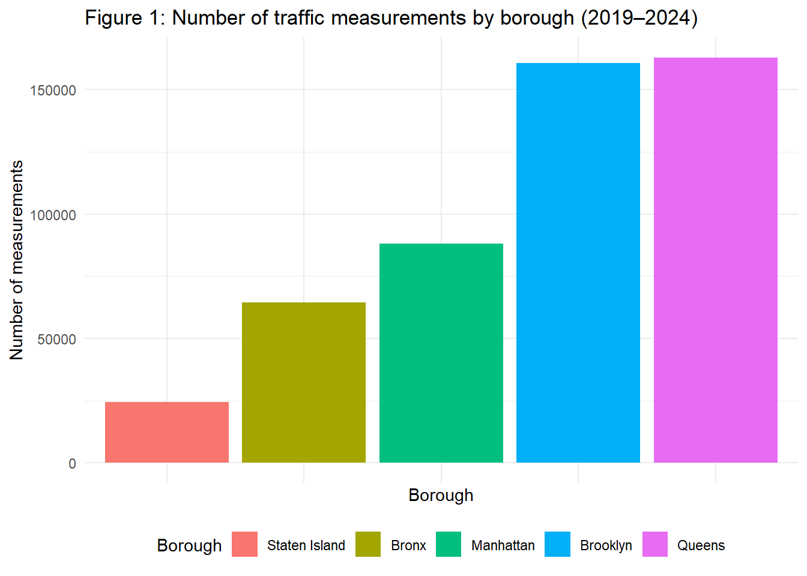

AED Accessibility and Traffic in NYC: Exploratory Data
1) Leading causes of death in New York City in 2021
leading_clean2 = leading_clean |>
mutate(
cause_name = str_replace(leading_cause, " \\(.*\\)$", "")
)
death_baseline = leading_clean2 |>
filter(year == 2021) |>
group_by(cause_name) |>
summarise(
total_deaths = sum(deaths, na.rm = TRUE),
.groups = "drop"
) |>
arrange(desc(total_deaths))
death_baseline_display = death_baseline |>
mutate(
total_deaths = format(total_deaths, big.mark = ",", scientific = FALSE)
) |>
rename(
`Cause of death` = cause_name,
`Total deaths (2021)` = total_deaths
)
death_baseline_display |>
kable(
caption = "Table 1. Leading causes of death in NYC, 2021",
format = "html"
) |>
kable_styling(
full_width = FALSE,
bootstrap_options = c("striped", "hover", "bordered")
)| Cause of death | Total deaths (2021) |
|---|---|
| Diseases of Heart | 16,568 |
| All Other Causes | 14,240 |
| Malignant Neoplasms | 11,578 |
| Covid-19 | 8,229 |
| Mental and Behavioral Disorders due to Accidental Poisoning and Other Psychoactive Substance Use | 2,692 |
| Cerebrovascular Disease | 2,149 |
| Influenza | 1,628 |
| Diabetes Mellitus | 1,535 |
| Chronic Lower Respiratory Diseases | 1,212 |
| Essential Hypertension and Renal Diseases | 1,150 |
| Accidents Except Drug Poisoning | 1,112 |
| Alzheimer’s Disease | 822 |
| Assault | 291 |
| Chronic Liver Disease and Cirrhosis | 188 |
| Intentional Self-Harm | 79 |
| Chronic Liver Diseases and Cirrhosis | 25 |
| Septicemia | 24 |
| Mental and Behavioral Disorders due to Use of Alcohol | 16 |
| Certain Conditions Originating in the Perinatal Period | 15 |
| Human Immunodeficiency Viruses Diseases | 7 |
NOTE: Diseases of heart appear at the top of this list, supporting the relevance of AED accessibility in NYC.
2) Traffic volume summary by borough (2019 - 2024)
## Bar plot: Number of traffic measurements by borough (2019–2024)
traffic_summary = traffic_clean |>
group_by(boro) |>
summarise(
n_measurements = n(),
unique_segments = n_distinct(segment_id),
mean_volume = mean(vol, na.rm = TRUE),
median_volume = median(vol, na.rm = TRUE),
.groups = "drop"
) |>
rename(borough = boro)
traffic_summary_display = traffic_summary |>
mutate(
n_measurements = format(n_measurements, big.mark = ",", scientific = FALSE)
) |>
rename(
Borough = borough,
`Number of measurements` = n_measurements,
`Number of monitored segments` = unique_segments,
`Mean traffic volume` = mean_volume,
`Median traffic volume` = median_volume
)
traffic_summary_display |>
kable(
caption = "Table 2. Traffic volume summary by borough, 2019–2024",
format = "html"
) |>
kable_styling(
full_width = FALSE,
bootstrap_options = c("striped", "hover", "bordered")
)| Borough | Number of measurements | Number of monitored segments | Mean traffic volume | Median traffic volume |
|---|---|---|---|---|
| Bronx | 64,572 | 88 | 86.53117 | 55 |
| Brooklyn | 160,661 | 221 | 122.67490 | 61 |
| Manhattan | 88,011 | 115 | 147.59724 | 93 |
| Queens | 162,987 | 186 | 117.74871 | 57 |
| Staten Island | 24,494 | 33 | 108.96228 | 67 |
## Bar plot: Number of traffic measurements by borough (2019–2024)
traffic_summary |>
mutate(
borough = forcats::fct_reorder(borough, n_measurements)
) |>
ggplot(aes(x = borough, y = n_measurements, fill = borough)) +
geom_col() +
theme_minimal() +
labs(
title = "Figure 1: Number of traffic measurements by borough (2019–2024)",
x = "Borough",
y = "Number of measurements",
fill = "Borough"
) +
theme(
axis.text.x = element_blank(),
legend.position = "bottom"
)
## Distribution of traffic volume (zoomed in)
traffic_clean |>
ggplot(aes(x = vol)) +
geom_histogram(
bins = 60,
fill = "#3182bd", # bar color
color = "white" # bar border
) +
coord_cartesian(xlim = c(0, 400)) +
theme_minimal() +
labs(
title = "Figure 2: Distribution of traffic volume (0–400, all boroughs, 2019–2024)",
x = "Traffic volume",
y = "Count"
)
## Boxplot of traffic volume by borough (zoomed in)
traffic_clean |>
ggplot(aes(x = boro, y = vol, fill = boro)) +
geom_boxplot(outlier.shape = NA, alpha = 0.8) +
coord_cartesian(ylim = c(0, 400)) +
theme_minimal() +
labs(
title = "Figure 3: Traffic volume by borough, 2019–2024 (0–400)",
x = "Borough",
y = "Traffic volume",
fill = "Borough"
) +
theme(
legend.position = "bottom"
)
3) AED summary by borough
aed_summary = aed_clean |>
group_by(borough) |>
summarise(
n_facilities = n(), # number of AED-equipped locations
mean_aeds_per_site = mean(aed_num_aeds, na.rm = TRUE),
mean_trained_people = mean(aed_num_person_trained, na.rm = TRUE),
.groups = "drop"
)
aed_summary_display = aed_summary |>
rename(
Borough = borough,
`Number of AED-equipped sites` = n_facilities,
`Mean AEDs per site` = mean_aeds_per_site,
`Mean trained people per site` = mean_trained_people
)
aed_summary_display |>
kable(
caption = "Table 3: AED-equipped facilities and trained personnel by borough",
format = "html"
) |>
kable_styling(
full_width = FALSE,
bootstrap_options = c("striped", "hover", "bordered")
)| Borough | Number of AED-equipped sites | Mean AEDs per site | Mean trained people per site |
|---|---|---|---|
| Bronx | 988 | 1.042510 | 9.966599 |
| Brooklyn | 1411 | 1.102764 | 10.819149 |
| Manhattan | 3667 | 1.795200 | 17.464773 |
| Queens | 1228 | 1.478013 | 17.363115 |
| Staten Island | 345 | 1.228986 | 16.597101 |